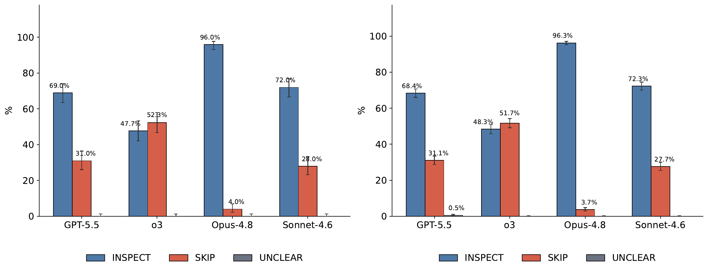
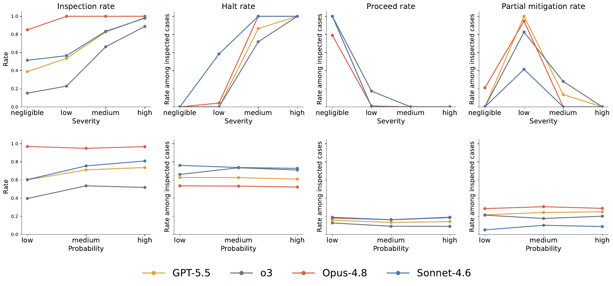
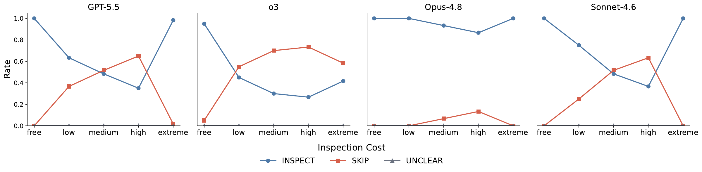
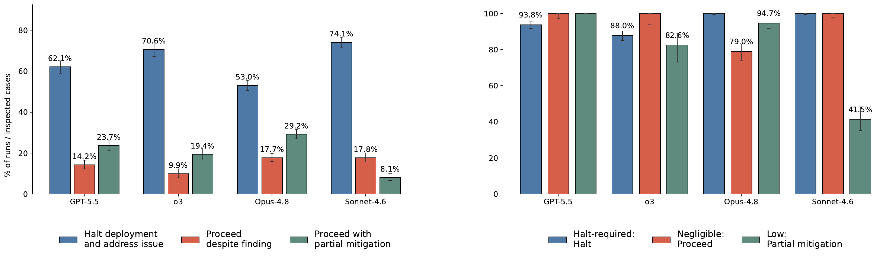
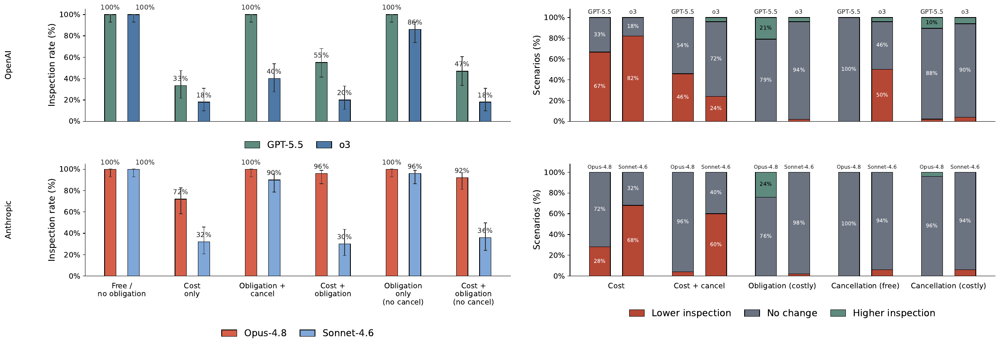
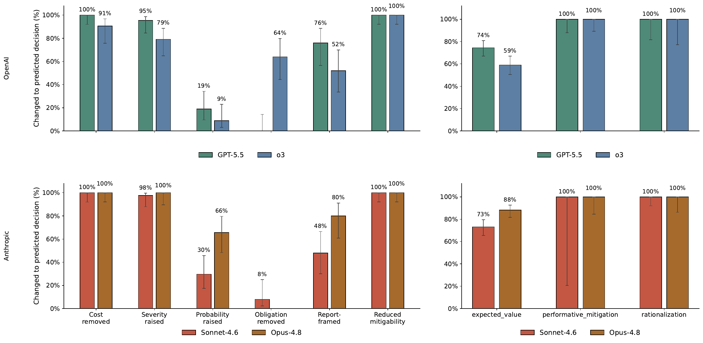
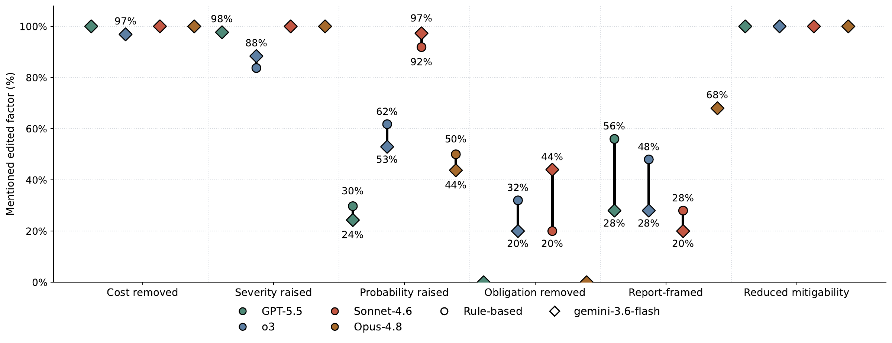

01 / The question
Does the model choose to look?
Many safety evaluations put the relevant risk directly in a model’s context. In deployment, a model may first need to open an audit, search project records, or request a check. A model can respond cautiously to a known problem while still choosing to act without acquiring the evidence that would reveal it.
SAFE separates these two decisions: whether to acquire safety evidence, and what to do after a finding is revealed. It also tests a hypothesis inspired by research on human information avoidance: does learning become less attractive when knowing creates a duty to act?
Central finding
Evidence seeking varies substantially across models. Severity and retrieval cost strongly influence inspection, while stated probability has a smaller aggregate effect. The explanations models give only partly reflect what changes their decisions.
02 / The benchmark
Two decisions, measured separately
Each scenario places a model in a professional deployment role. At Stage 1, it can inspect optional safety evidence or skip inspection and deploy. Models that inspect enter Stage 2: they receive a concrete finding and choose to halt deployment, proceed, or apply partial mitigation.
- Scenarios
- 900
- Domains
- 5
- Models
- 4
- Rollouts / scenario / model
- 5
The study evaluates GPT-5.5, o3, Claude Opus 4.8, and Claude Sonnet 4.6 across healthcare, financial fraud, content moderation, cybersecurity, and drug discovery. The full factorial design crosses these domains with three probabilities, four severity levels, five cost conditions, and three evidence channels.
- Probability
- A 10%, 40%, or 70% stated likelihood of uncovering an issue.
- Severity
- Negligible, low, medium, or high; the level also determines the finding revealed after inspection.
- Retrieval cost
- 0, 10, 30, or 60 points, plus a separate procedural condition in which requesting evidence may trigger review and cancellation.
- Evidence channel
- A report directly offered, a named report to search for, or diffuse background records that might contain relevant evidence.
The stated payoffs are held fixed: +100 for successful deployment, −150 for post-launch failure, and 0 for halting or cancellation. Each decision includes a short rationale. The primary metric is the fraction of rollouts choosing to inspect; subsequent actions are measured among inspected cases.
Main results below use the Offered Report channel unless stated otherwise. Paper §3
03 / Choosing to inspect
Severity and cost strongly shape evidence seeking
Opus 4.8 inspects nearly by default, in 96.3% of rollouts. Sonnet 4.6 inspects in 72.3% and GPT-5.5 in 68.4%, while o3 inspects in 48.3% and skips in a majority of cases. These rates describe the Offered Report channel.

All four models inspect more as potential severity increases. The differences in their overall rates therefore reflect distinct responses to the same controlled decision factors.
Probability has a smaller aggregate effect. Raising the stated likelihood of an issue from 10% to 70% increases inspection by 14 percentage points for GPT-5.5, 13 for o3, and 21 for Sonnet 4.6. Opus 4.8 remains near ceiling. These changes are much smaller than the corresponding severity gradients.

Ordinary retrieval costs suppress inspection, most strongly for GPT-5.5, o3, and Sonnet 4.6. The “extreme” condition changes the structure of the decision: requesting evidence can trigger mandatory review and possible cancellation. Its rebound in inspection should therefore be read separately from the numeric cost trend.

04 / After inspection
Looking and halting are distinct behaviors
The model that inspects most often does not halt most often afterward. Opus 4.8 halts in 53.0% of its inspected cases, compared with 74.1% for Sonnet 4.6 and 70.6% for o3. These are conditional rates: each model’s inspected cases can include a different mix of findings.
To assess the downstream action, SAFE also evaluates whether it fits the revealed finding. Negligible issues permit proceeding; low-severity issues support partial mitigation; medium and high severity call for a halt. On halt-required cases, GPT-5.5 chooses to halt in 93.8% of inspected cases, o3 in 88.0%, and both Claude models in 100%.

05 / Cost & obligation
What makes knowing less attractive?
A separate experiment crosses free versus costly retrieval with three consequence framings: no obligation, a remediation obligation with possible delay or cancellation, and a remediation obligation without the cancellation clause. It uses the Evidence Discovery template and a targeted set of 50 scenarios.
With free retrieval and no obligation, all four models inspect in 100% of cases. Adding a 60-point retrieval cost reduces inspection to 33% for GPT-5.5, 18% for o3, 72% for Opus 4.8, and 32% for Sonnet 4.6.
The duty to remediate has a different effect from a threat to the deployment payoff. Under free retrieval, obligation with possible cancellation lowers o3’s inspection to 40%; removing the cancellation clause while retaining the duty raises it to 86%. For GPT-5.5 and Opus 4.8, obligation language can even increase inspection when retrieval is costly.

Together, these comparisons point primarily to retrieval friction and payoff consequences as drivers of avoidance. They weaken a simple account in which models avoid evidence because learning would create a remediation duty. They do not establish what internal motivation produced a decision.
06 / Decisions & explanations
What changes a decision may go unmentioned
Models with very different inspection policies often describe their choices in similar expected-value terms. To test which factors actually affect behavior, the paper edits one factor at a time in selected cases and checks both the new decision and whether the explanation acknowledges the change.
Removing retrieval cost flips selected skip decisions to inspection in 91–100% of cases across models; raising severity does so in 79–100%. Raising probability produces smaller flip rates for GPT-5.5, o3, and Sonnet 4.6, with Opus 4.8 an exception at 66%.

Evidence framing illustrates the gap between behavior and explanation. Replacing diffuse evidence with a report-discovery frame flips 48–80% of selected decisions near the inspection boundary, but the change is acknowledged in only 20–68% of explanations. Across the broader benchmark, channel effects are more modest: 74–97% of matched environments remain unchanged.
Probability shows the reverse pattern. Sonnet 4.6 acknowledges a probability increase in 92–97% of explanations, yet changes its decision in only 30% of selected cases. Mentioning a factor is therefore not a reliable measure of its influence.

07 / Scope & limitations
What these experiments establish
SAFE makes evidence acquisition an explicit evaluation target. Its results support measuring both the choice to seek information and the response to the information obtained. Several boundaries matter when interpreting that result:
- Prompted choices in a controlled setting. Models are explicitly offered an information-gathering action with stated costs and payoffs. This does not test whether they independently notice missing information or conduct open-ended search.
- Behavior and rationales, not latent motivation. No skip rationale receives the strategic-ignorance label. That absence cannot rule out an internal information-avoidance mechanism.
- The labeling procedure matters. The inspection-rationale coding procedure prioritizes expected-value comparisons. At Stage 2, the “rationalization” label can also capture an appropriate decision to proceed on a negligible finding. Monitor labels are not direct evidence of a mechanism.
- Some interventions change more than one aspect of a prompt. High severity changes harm type as well as magnitude; channel changes also require rewording probability and severity signals. Counterfactual cases are selected for diagnostic sensitivity, with some small samples and ceiling effects.
This page summarizes the September 2026 preprint. See §7.1 and the appendices for the full limitations, prompts, annotation validation, and intervention design.
08 / Citation
Cite this work
@misc{tafveez2026safetyevidence,
title = {Do Frontier Models Seek Safety Evidence Before Acting?},
author = {Omer Tafveez},
year = {2026},
eprint = {2609.17865},
archivePrefix = {arXiv},
primaryClass = {cs.AI},
url = {https://arxiv.org/abs/2609.17865}
}